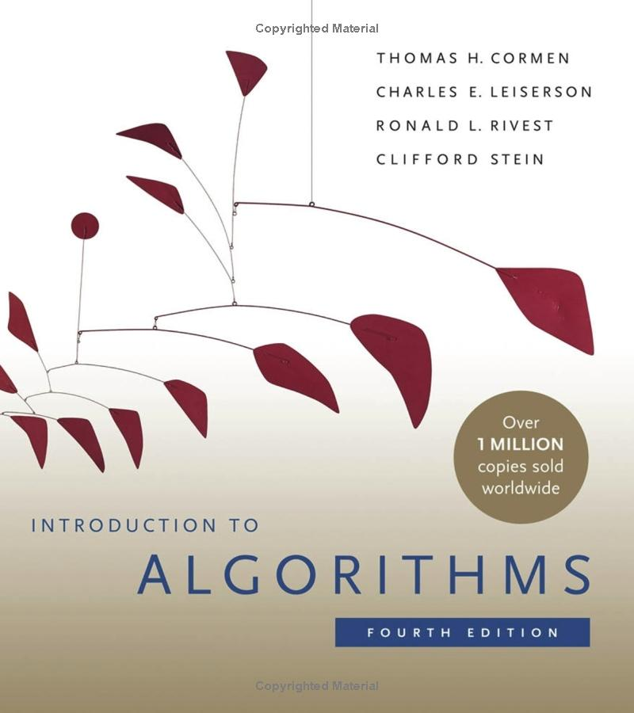

CSE 101: Fall 2023
Course Overview


|
 |
Introduction to Algorithms, 4th Edition (The MIT Press) Cormen, Leiserson, Rivest, Stein Online version |
 |
Introduction to Algorithms, 3rd Edition (The MIT Press) Cormen, Leiserson, Rivest, Stein Online version |
Learning Objectives:
Learn about and use data structures and appropriate algorithms for interesting and practical problems.
Coursework:
| Coursework | Percentage |
|---|---|
| Programming Assignments | 60% |
| Quizzes | 30% |
| Homeworks | 10% |
Grading Scale:
We have two options for mapping numeric scores to letter grades.
The default grading scale which does not take into account how the
rest of the class performs is listed below.
Grades are rounded to nearest hundredths.
The default grading scale is as follows:
A+ = 100-97.00%
A = 96.99-93%
A- = 92.99-90%
B+ = 89.99-87%
B = 86.99-83%
B- = 82.99-80%
C+ = 79.99-77%
C = 76.99-70%
D = 69.99-60%
F = 59.99-0%
Note: If you elected for P/NP,
you need to have a C or better to earn a P.
Note also that while D is considered passing, it cannot satisfy a prerequisite for another course.
The other option, which the Fall 2021 class voted for (simple majority), is to curve the grades. The mapping is actually pretty close to the default one, but may vary from one quarter to another as it would depend on how the class performed.
Attendance:
Attendance in the labs is required. You are responsible for materials covered in the lecture and the labs. Quizzes are held during lecture hours.
Office Hour:
A note about my office hours: office hours end if/when there is no one else waiting to talk to me unless you let me know in advance that you need to come later. Send me an email to schedule something else if you can't make it during my regular office hours.
General Policies:
All course work are intended as individual effort (unless explicitly mentioned otherwise) and are graded as such. It is okay to discuss general approaches and algorithms with other students, but this should be done without writing, looking, or sharing code. Code found on the web, code generated by LLM or other means, etc. are not your own code. Submitting such code as your own work is considered cheating. Cheating or plagiarism in any form will not be tolerated. Cheating is an automatic fail. Here's how much a fail potentially costs in dollars. Aside from academic sanctions, additional disciplinary sanctions may apply if this is not your first offense. Punishment will match severity of offense. (There has been at least one instance where a student was expelled even though it was a first offense!) You are responsible for protecting your solutions and programs from being copied by others. Refer to the Academic Misconduct Policy for Undergraduates. If anything is not clear, ask me.
IMPORTANT:
Before you submit your work, make sure that your program compiles and runs on the campus server machines e.g. unix.ucsc.edu. This is the environment where your code will be recompiled and tested!
Submitting your work:
Each programming assignment should be placed in its own folder. The folder should contain a makefile and necessary .h and .c files. Your code should have proper documentation including comment blocks for each function, and inline comments as appropriate. Code should be formatted so that it is easy for humans to read.
You can re-submit as often as you want. We will only grade the most recent submission.
DRC Accommodation:
If you need accommodation, please contact me as soon as possible since we'll need to request room/proctor in advance. Be sure to provide the proper authorization letter.
Transfer Students:
Welcome to UCSC! We are thrilled to have you here. We recognize that transfer students have a unique experience and in addition to the regular coursework may have other challenges associated with starting off at UCSC as a new student. Please don't hesitate to reach out to me or to the TAs for help. We all want you to be successful and look forward to your unique contributions to our learning community (welcome message adopted from Dr. Dunkin's message).
Last modified
Tuesday, 17-Oct-2023 14:36:50 PDT.